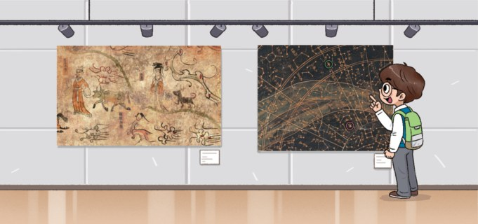
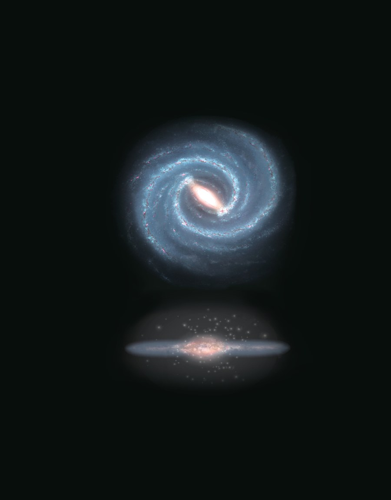
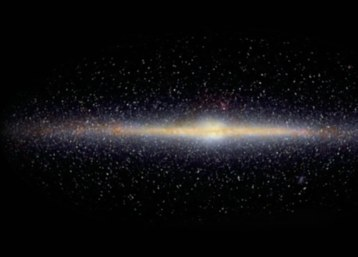
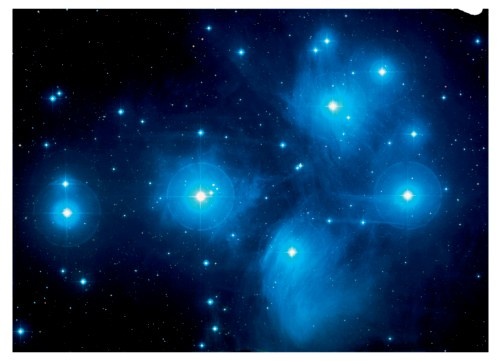
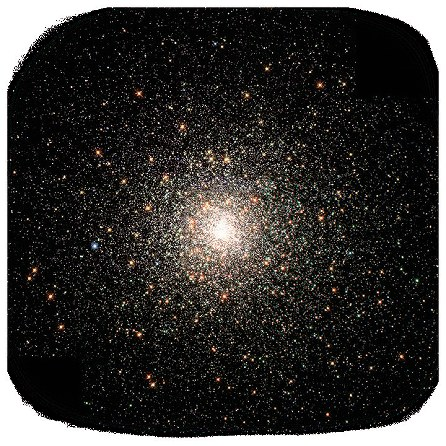
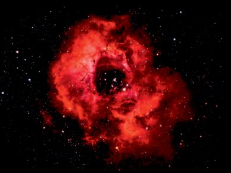
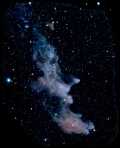
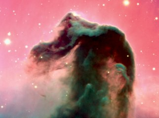

우리은하
갈릴레이는 천체 망원경으로 은하수가 수많은 별의 집단이라는 것을 관측했고, 그 후 과학자들은 은하수가 우리은하의 일부임을 알아냈습니다.
이 단원에서 나는
- 우리은하의 구조와 크기를 설명할 수 있다.
- 우리은하를 구성하는 성단과 성운의 특징을 비교할 수 있다.
도입 은하수를 이루고 있는 천체들은 무엇일까?

은하수를 이루고 있는 천체들은 무엇일까요?
은하수를 이루고 있는 천체들은 각각 성운, 성단, 별 등입니다. 우리은하의 대부분의 별들은 납작한 면에 밀집해 있으며 태양계도 그 면에 위치합니다. 그래서 태양계에서 우리은하를 바라보면 거의 같은 평면에 있는 별들을 보게 되므로 띠 모양으로 보입니다.
개념 1 우리은하의 모양과 크기는 어떠할까? 교과서 295쪽 | 그림 10 |
우주에는 수천억 개의 별들로 이루어진 천체 집단인 은하들이 있습니다. 그중 태양계가 속해 있는 은하를 우리은하라고 합니다. 아래 3차원 모형을 돌려 보며 위에서 본 모습과 옆에서 본 모습을 비교해 보세요.
3D 우리은하 — 직접 돌려 보기
화면을 드래그하면 자유롭게 회전합니다
우리은하 한눈에
- 위에서 보면 중심부에 막대 구조가 있고, 막대 끝에 소용돌이 모양의 나선팔이 있다.
- 옆에서 보면 중심부가 볼록한 원반 모양이다.
- 지름은 약 30000 pc이다.
- 태양계는 은하 중심에서 약 8500 pc 떨어진 나선팔의 원반 면에 있다.
- 별들이 대부분 원반 면에 분포하므로, 옆에서 보았을 때 띠 모양의 은하수로 관측된다.
- 타원 은하 모양이 타원인 은하로, 구형에 가까운 것부터 찌그러진 정도에 따라 E0에서 E7까지로 나뉜다.
- 나선 은하 정상 나선 은하와 막대 나선 은하로 나뉜다. 두 형태 모두 나선 모양의 팔을 가진다.
- 불규칙 은하 타원형 또는 나선형으로 분류하기 어려운, 일정한 형태를 갖추지 않은 은하.
개념 2 은하수는 왜 계절마다 다르게 보일까? 교과서 294~295쪽
우리은하의 별들은 대부분 납작한 원반 면에 모여 있고 태양계도 그 면 위에 있습니다. 그래서 하늘을 둘러보면 은하수가 띠 모양으로 보이고, 바라보는 방향에 따라 밝기와 두께가 달라집니다.
태양계에서 바라본 밤하늘 — 은하수
계절 버튼을 누르면 바라보는 방향이 부드럽게 바뀝니다
정리하면
- 태양계에서 보면 별들이 거의 같은 평면에 있으므로 은하수가 띠 모양으로 보인다.
- 여름철에는 우리은하의 중심 방향(A)을 바라보므로 별이 많아 은하수가 밝고 두껍게 보인다.
- 겨울철에는 중심의 반대 방향(B)을 바라보므로 은하수가 어둡고 얇게 보인다.
개념 3 우리은하는 어떤 천체들로 이루어져 있을까? 교과서 296~297쪽
우리은하에는 많은 수의 별이 좁은 공간에 모여 집단을 이루는 성단이 있습니다. 별과 별 사이의 공간에는 기체와 먼지들이 희박하게 퍼져 있는데 이를 성간 물질이라 하고, 성간 물질이 모여 있어 구름처럼 보이는 천체를 성운이라고 합니다.
성단 — 별들의 무리

산개 성단 좀생이성단
수십 ~ 수만 개의 별들이 일정한 모양 없이 모여 있다. 파란색의 젊은 별로 구성되어 있으며 대부분 우리은하의 나선팔에 분포한다.

구상 성단 NGC 6093
수만 ~ 수십만 개의 별들이 빽빽하게 모여 공 모양을 이룬다. 붉은색의 늙은 별로 구성되어 있으며 우리은하의 중심부와 은하 원반을 둘러싼 구형의 공간에 많이 분포한다.
성운 — 성간 물질의 구름

방출 성운 장미성운
근처에 있는 고온의 별로부터 에너지를 받아 붉은빛을 낸다.

반사 성운 마귀할멈성운
주변의 별빛을 반사하여 파란빛을 낸다.

암흑 성운 말머리성운
뒤에서 오는 별빛을 가리기 때문에 검게 보인다.
| 그림 11 | 성단과 성운 · 성운은 주로 우리은하의 나선팔에 분포합니다.
반사 성운이 푸르게 보이는 이유 — 작은 입자는 파장이 짧은 푸른빛을 더 잘 산란시킨다. 실제로는 산란 효과이지만 중학교 교육과정에서는 ‘반사’로 다룬다.
정리 핵심 정리
- 우리은하 : 태양계가 속해 있는 은하
- 우리은하의 모양 : 위에서 보면 중심부에 막대 구조가 있고 막대 끝에 소용돌이 모양의 나선팔이 있으며, 옆에서 보면 중심부가 볼록한 원반 모양
- 우리은하의 크기와 태양계의 위치 : 지름이 약 30000 pc이고, 은하 중심에서 약 8500 pc 떨어진 나선팔의 원반 면에 태양계가 위치
- 성단 : 별이 집단적으로 모여 있는 것. 일정한 형태가 없는 산개 성단과 구형의 구상 성단
- 성운 : 성간 물질이 구름처럼 모여 있는 것. 붉은빛의 방출 성운, 푸른빛의 반사 성운, 별빛을 차단해 검게 보이는 암흑 성운
- 여름철 은하수가 더 두꺼운 이유 : 여름철 밤하늘은 우리은하 중심 방향을 향하기 때문
확인 이것만은 & 문제로 확인
서술형 은하수가 띠 모양으로 관측되는 까닭
스스로 정리하기
우리은하를 위에서 보면 중심부에 막대 구조가 있고 막대 끝에 소용돌이 모양의 ㄴ ㅅ ㅍ이 있다.